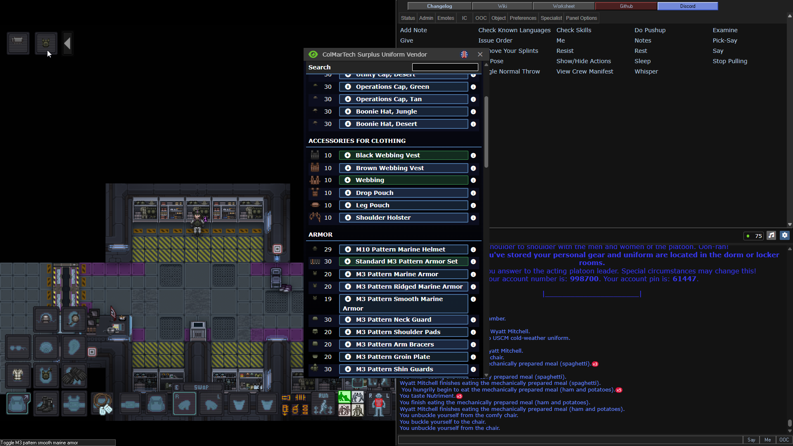
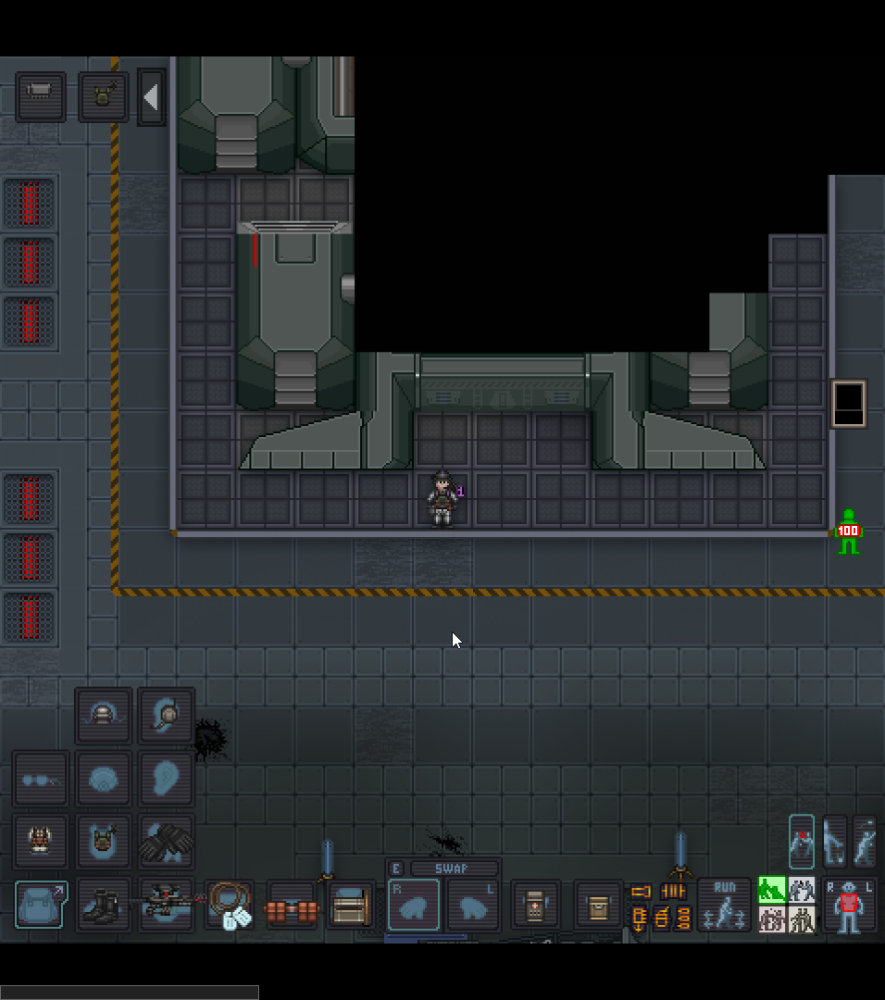
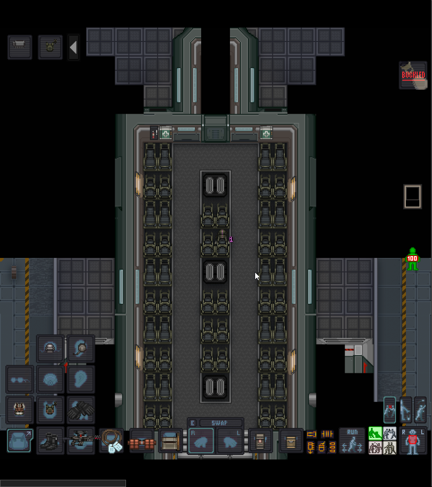

Арсенал: Снаряжение и подготовка к бою
Брифинг окончен, двери арсенала открыты. Пора превратиться из новобранца в полноценную боевую единицу ККМП.

Броня и новый интерфейс
Первым делом подойдите к автомату с броней.
- Экипировка: Возьмите шлем и бронежилет (дополнительные элементы — это декор). Наденьте их в соответствующие слоты.
- Панель управления снаряжением: Как только вы наденете броню, слева сверху появится новый интерфейс. Здесь можно включать фонарик на броне, переключать визор шлема, раскладывать приклады, сошки или активировать подстволы.
Подсумки и рюкзаки
Выберите способ переноски снаряжения:
- Backpack (Рюкзак): Вместительный, но открывается с небольшой задержкой.
- Satchel (Сумка): Меньше объемом, но открывается моментально.
- Обвесы: На броню можно нацепить подсумки для брони, на форму — жилет для мелочей, кобуру или ножную сумку.
- Карманы: В слоты карманов можно нацепить подсумки (pouches).
ℹ Совет по снаряжению
Опытные бойцы часто вместо пистолета берут дополнительный жилет и забивают его медициной и
сухпайками. Пистолет в реалиях боя используется крайне редко.
Выбор и настройка оружия
Пройдите правее к автоматам с пушками.
- Рекомендация для новичка: Выбирайте М-39. Это надежный ПП, на который можно поставить смарт-прицел.
- Патроны: Из этого же автомата можно взять обычные патроны к оружию, а из соседнего особые по типу бронебойных, токсичных и прочих...
⚠ Пустое оружие
Учтите, что изначально оружие взятое из автомата не заряженное, возьмите магазин и засуньте его в
автомат на ЛКМ
- Обвесы (Attachments): В автомате правее возьмите модули. Для М-39 идеально подойдут: Smart Sight (умный прицел — не дает стрелять по своим), Recoil Compensator (компенсатор отдачи) и передняя рукоятка или лазер.
Важные механики владения оружием:
- Предохранитель: Чтобы не подстрелить товарища, зажмите Alt + ЛКМ на пушке в руке — появится надпись Safety ON. Не забудьте выключить её перед боем тем же сочетанием!
- Хват: При стрельбе с одной руки прицел сильно гуляет. Нажмите Z, имея пушку в активной руке и свободную вторую руку — персонаж перехватит оружие двумя руками.
- Быстрый доступ: Клавиша E позволяет закинуть пушку за спину и быстро достать её обратно.
- Нож: Кликните ЛКМ по своим сапогам свободной рукой, или Ctrl + E. В каждых десантных ботинках спрятан штык-нож.
Амуниция и медицина
Вернитесь в арсенал, наденьте разгрузку для магазинов и пояс на ваш выбор.
Полевая аптечка:
В один из карманов положите First Aid Pouch. Если он пустой, возьмите рядом со шкафом брони:
- Gause (Бинты): От порезов и кровотечений.
- Ointment (Мазь/Спрей): От ожогов.
- Splints (Шины): При переломах конечностей.
- Tramadol (Инъектор): Обезболивающее, позволяет дольше стоять под огнем. Не переборщите!
ℹ Как лечить
В зеленом интенте (1) кликните по себе или другу, чтобы осмотреть состояние. Если видите
«перелом ноги» — выберите ногу на кукле, возьмите в руку шину (Splint) и кликните по пациенту.
Полезные мелочи
- Флаеры (Сигнальные огни): Положите их во второй карман. Клик по карману достанет флаер, нажатие Z активирует его и переведет вас в режим метания.
- Карта: В каске есть слот — засуньте туда карту, чтобы не потеряться.
- Еда: Киньте в рюкзак пару MRE (сухпайков).
- Инструменты: Стоит иметь хотя бы одну фомку (Crowbar) на отряд для вскрытия дверей.
Посадка и высадка
Когда закончите, идите направо к десантному кораблю (Dropship).

- Погрузка: Помогите товарищам затащить ящики с припасами. Чтобы тащить ящик, подойдите в упор и нажмите Ctrl + ЛКМ на ящик.
- В полете: Сядьте в кресло, иначе при старте и маневрах персонаж упадет и ударится.

Боевое развертывание:
По прилету отстегивайтесь и слушайте командира. Высадки бывают «жаркими».
- Возьмите оружие в обе руки (Z).
- Проверьте предохранитель (Alt + ЛКМ).
- Следите за линией огня: не стойте перед теми, у кого нет смарт-прицелов.
- Давайте инфу в чат, не гуляйте в одиночку и веселитесь!